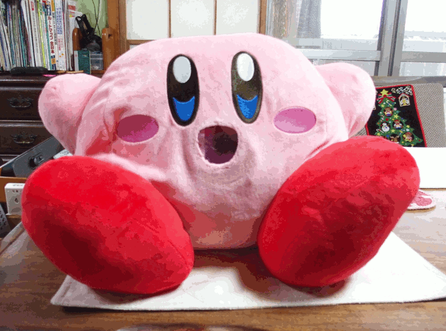
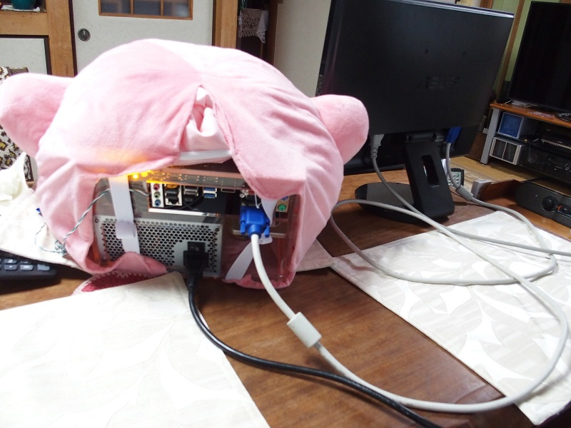
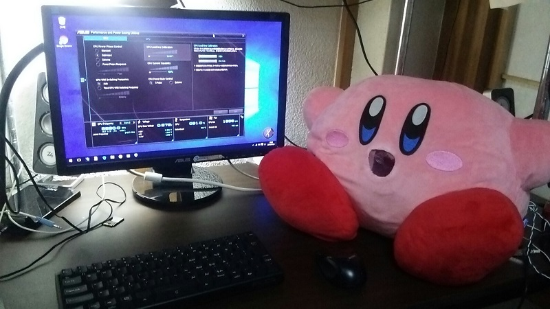

カービィでPC作ってみた 初めての自作PC
俺の カービィ，インテル入ってるんだぜ！！

口のどアップ
今回のカービィはCore i3を吸い込んだようです．
口はスピーカーではなく吸気口です．金網が貼ってあるので，原作と違って大きい物は吸い込めませんし，吸い込んだところでファンが壊れます．
熱暴走が怖いので常にファンはフル回転です．ゴォーというカービィの吸い込み音を感じることができます．
ぬいぐるみなのでまあまあ柔らかいです．しかしぬいぐるみと違って重量感と排熱によるぬくもりがあります．

裏面
背面は汚いのであまり見ないようにしましょう．
縫い付けてあるわけではなく，ゴムバンドで止めているだけなので中身は容易に取り出しが可能です．
設計ミスで中身がななめに突き刺さっています．
ちなみにグラボは刺すスペースありません．

起動した様子
テーブルの上（作業環境）にプラスチックや金属の塊ではなく，ぬいぐるみがあることで，女子力をアップすることができます．
そのままもたれかかって寝ることも可能です．枕として最適な硬さを持っています．